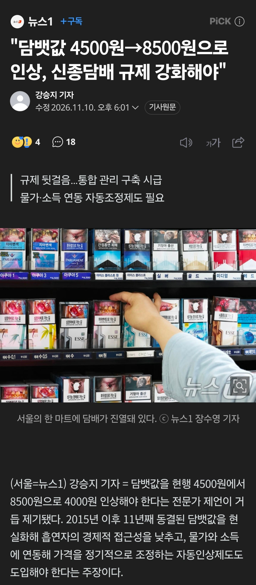
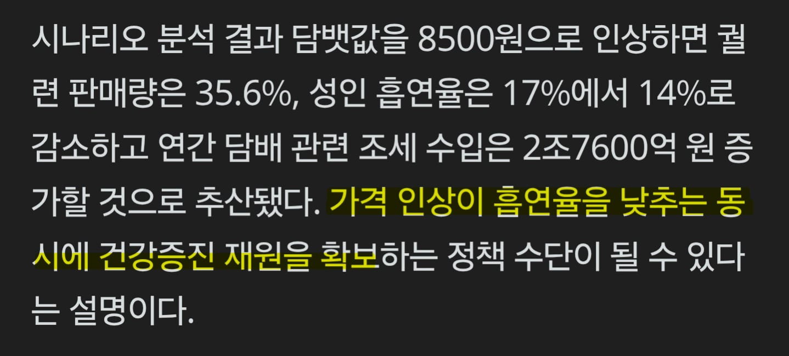

https://n.news.naver.com/mnews/article/421/0009281850


흡연자가 금연 하던지 말던지 관심은 없고 길빵충 담배꽁초 아파트 흡연 하는 놈들 꼬라지 볼때마다
돈 겁나 올라서 고통받는거나 보고싶음
https://n.news.naver.com/mnews/article/421/0009281850


흡연자가 금연 하던지 말던지 관심은 없고 길빵충 담배꽁초 아파트 흡연 하는 놈들 꼬라지 볼때마다
돈 겁나 올라서 고통받는거나 보고싶음
제발좀 올려라 제발
한갑 5만원 가야한다고 봄.
국밥도 만원 넘겼는데 담뱃값도 그정도는 돼야지
바보들 그냥 매년 찔끔찔끔 올리면 되는거 아니니 육작이 어느새 1200원이다
담배 가격 인상에 물가상승 ㅇㅈㄹ
누가 담배 꼭 사라고 강요함?
담배 가격 15000원으로 올려야함
대신 흡연구역 지정이나 단속같은거도 강화해야하고
그리고 술도 가격 올려야함
술은 전체적으로 올리기보다 주세법 자체를 뜯어고쳐야함.
전통주나 수입주류는 주세 미쳐있어서 더 올리는건 문제있지만 초록병소주같은 주정들어간 저가형 주류나 맥주종류는 너무 저렴해서 싼맛에 술쳐먹고 사고치는 새끼들이 너무 많음
4만원도 ㄱㅊ 술도 소주한병 4만원ㄱㄱ
2천원에서 4천원 오를때 흡연구역같은거 잘지정되고 정돈 될줄 알았는데
보니까 피는 사람들의 마인드에 문제였음 그냥 20만원 받고 흡연자를 줄이는게 맞음
담배값만큼은 한 10만원까지 올려도 될듯
그정도면 길빵해도 "저새끼 뭐 좋은일 있나본데" 해줄수 있음 ㅋㅋㅋㅋㅋ
난 끊어서 괜춘. 소주 한병 만원 담배 한갑 만오천원 ㄱㄱ